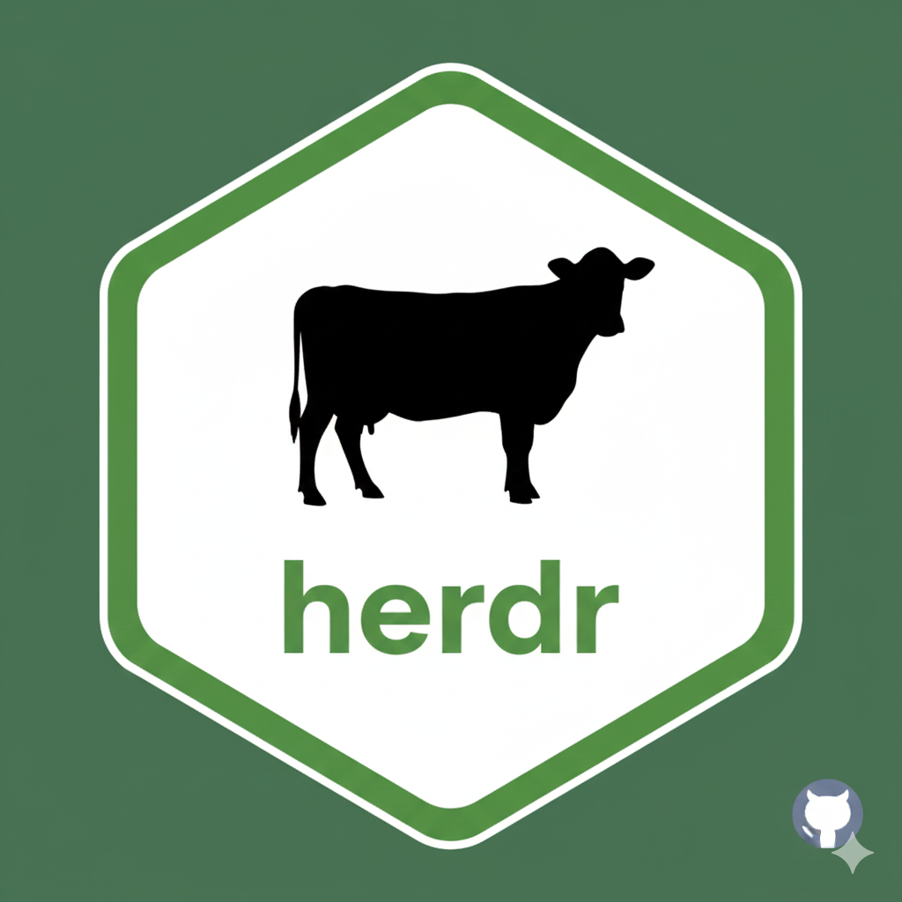

Calculate Small Ruminant Population Structure (Sheep and Goats)
calculate_population_small_ruminants.RdModels the complete sheep or goat flock/herd structure from mature breeding animals using biological prolificacy rates, reproductive cycle duration (lambing or kidding interval), replacement dynamics, and feeding period days for slaughter offspring.
Usage
calculate_population_small_ruminants(
census_df,
rate_parameters = NULL,
definitions = NULL,
weights = NULL,
data_dir = "user_data",
species = c("sheep", "goat")
)Arguments
- census_df
Data.frame with filtered census data (
farm_id,region,subregion,animal_tag,populationin head).- rate_parameters
Optional data.frame of reproduction and replacement rates in long format (
animal_tag,parameter,value).- definitions
Optional definitions data.frame (e.g.,
ruminant_definitions) containingpr_sheep_goat(lambs/kids per parturition) andreplacement_rate.- weights
Optional weights data.frame (e.g.,
livestock_weights) containingproductive_period_days(days).- data_dir
Character. Path to the folder containing input CSV files. Default is
"user_data".- species
Character. Small ruminant species:
"sheep"or"goat". When omitted, inferred automatically fromcensus_df("goat"if goat tags/types are present without sheep, otherwise"sheep").
Value
A tibble with columns farm_id, region, subregion,
animal_tag, and population (head/year or AAP) for all non-zero cohorts.
Demographic Flow Logic
Mature Parents:
mature_<species>_female_dairy,mature_<species>_female_meat,mature_<species>_male_dairy,mature_<species>_male_meat(where<species>is"sheep"or"goat").Parturition Frequency: Number of lambings/kiddings per breeding female per year (
365 / productive_period_days), supporting accelerated reproductive systems (e.g., 240 days = 1.52 parturitions/year).Replacements: Female and male offspring retained annually to sustain the breeding herd.
Births: Total offspring born per year (
females * frequency * prolificacy).Slaughter Offspring: Remaining offspring (
Births - Replacements) scaled to Average Annual Population (AAP, IPCC Eq. 10.1) based on feeding duration (days / 365).
Examples
if (FALSE) { # \dontrun{
census <- tibble::tibble(
farm_id = "farm_1",
animal_tag = "mature_sheep_female_meat",
region = "spain",
subregion = "aragon",
population = 1000
)
calculate_population_small_ruminants(census, species = "sheep")
} # }